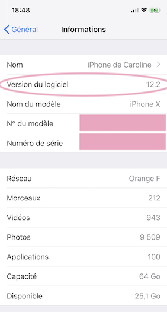

iPhone ou iPod Touch
Loop fonctionnera sur tout iPhone ou iPod Touch ayant iOS 12 ou plus récent. Donc, les périphériques compatibles sont :
-
iPhone X, XS, XR, XS Max
-
Phone 8 8+
-
iPhone 7, 7+
-
iPhone 6, 6+, 6s, 6s+
-
iPhone SE
-
iPhone 5s
-
iPod Touch, 6 ou plus recent
Attention aux utilisateurs de iOS 12.2
Si vous utilisez iOS 12.2, vous devez aussi utilisez macOS 10.14.3 (Mojave) et Xcode 10.2 minimum.
Loop fonctionne-t-il sur iPad ?
Non. Loop requiert que l’application Santé soit présente sur le périphérique pour sauvegarder les données d’insuline, taux de glucose, et données de glucides pour looper. Donc, Loop ne fonctionne pas sur iPad car l'iPad n'a pas de capacité de Santé.
Loop fonctionne-t-il sur Androïde ?
Non. Loop est programmé en Swift, un langage informatique pour iOS, qui requiert l'intégration de Santé (voir ci-dessus).
Trouvez sa version iOS
Allez dans les réglages de votre iPhone, puis dans général, puis informations. Là vous trouverez l'iOS, marqué sous "version du logiciel".
